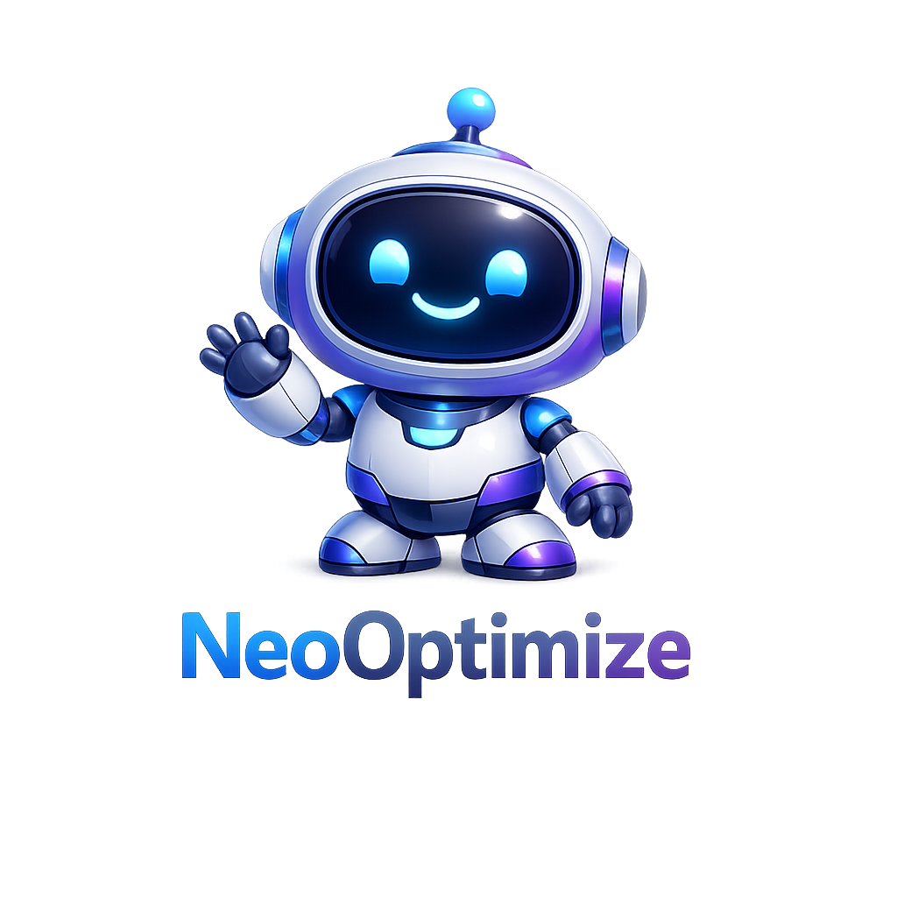

Live Operations
Cockpit real-time untuk optimasi Windows, observability, dan AI execution loop.
Semua panel di bawah ditenagai data lokal dari desktop client dan respons live dari backend Neo AI.

Neo AI Windows Command Center
Client akan register ke Hugging Face Space, memantau kondisi lokal, lalu mengirim insight dan command execution ke Supabase.
Live Operations
Semua panel di bawah ditenagai data lokal dari desktop client dan respons live dari backend Neo AI.
Real Actions
Telemetry Timeline
Top Processes
Recent Activity
Reports